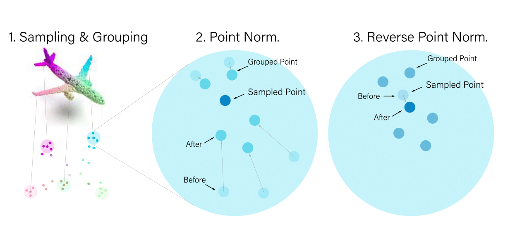
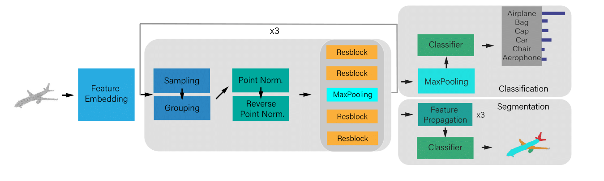

Overview of the proposed DualNorm in our PointNorm framework.
This addresses point cloud irregularity and facilitates learning for subsequent layers.
PointNorm's "push-and-pull" strategy for optimizing the point cloud density.
PointNorm for shape classification and part segmentation. Given an input point cloud, PointNorm embeds point features, uses sampling-grouping and DualNorm to normalize points, and employs Residual Blocks to leverage hierarchical features for accurate classification and segmentation.
